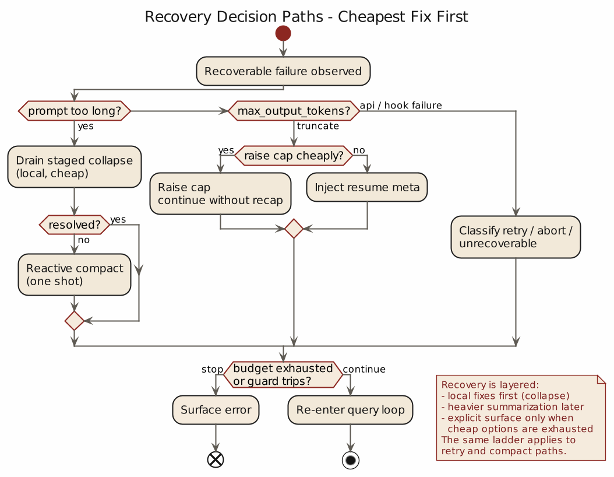
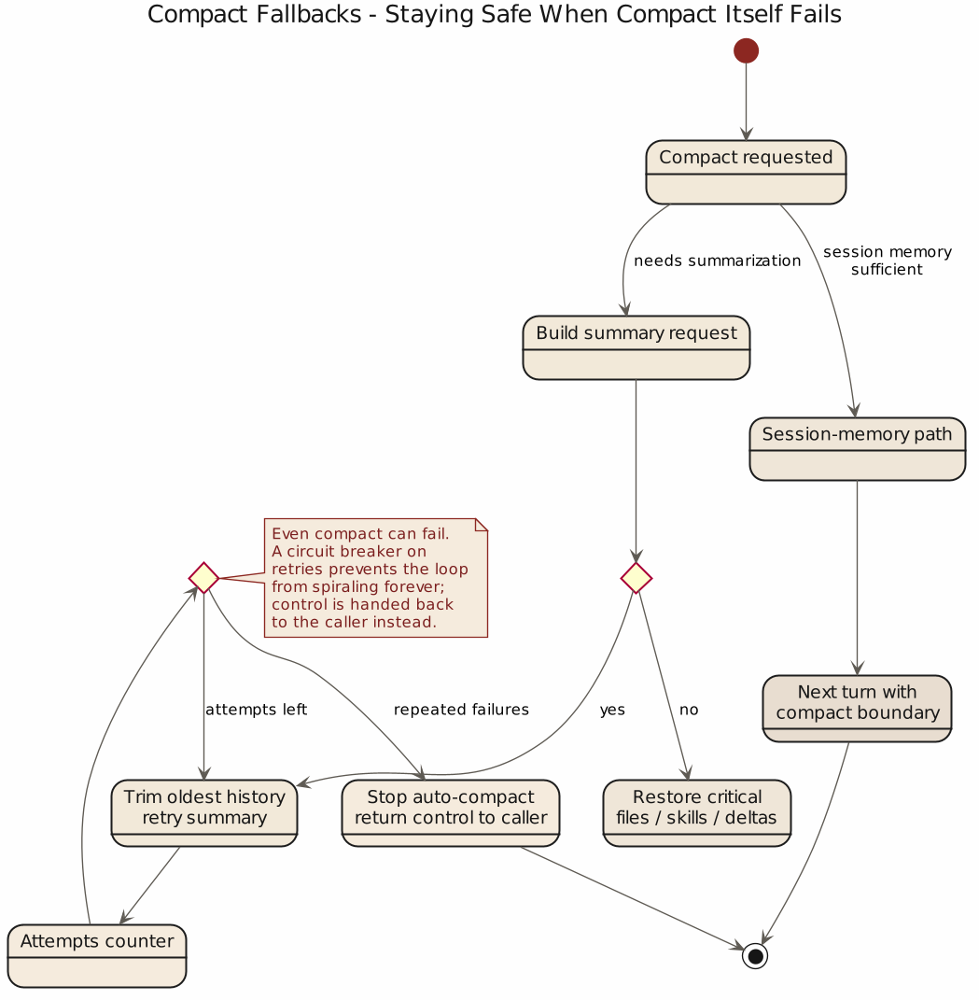

第 6 章 错误与恢复：出错后仍能继续工作的代理系统
6.1 工程世界最不值得相信的话，就是“正常情况下”
很多设计文档只讲“正常情况下”，仿佛主路径漂亮就能让错误退场。代理系统进入真实运行环境后，这种写法会迅速露馅：模型会被截断、请求会超长、hook 会制造回环、工具会中断、fallback 会发生、恢复逻辑本身也会失手。
判断一个代理系统成熟不成熟，不是看它顺畅时多像人，而是看它出故障时像不像系统。Claude Code 在这一点上没有假装自己不会出错：源码反复体现一个冷静判断——错误属于主路径，恢复是必须提前设计好的运行机制。
6.2 prompt too long 是一种必然周期
对长会话代理来说，prompt too long 是一种迟早会来的季节变化。你如果把它当偶发异常，系统迟早会被它教育。
Claude Code 的 query.ts 就没有把它当偶发异常处理。在 src/query.ts 里，系统甚至会“暂时扣下”这类错误，不立刻把它原样抛给用户。流式阶段里，withheld 逻辑会识别 recoverable errors，包括：
- prompt too long
- media size error
- max output tokens
这件事的意思很明确：有些错误要先交给恢复系统试着处理，再决定是否展示给用户。这个顺序很关键，因为用户真正关心的通常是系统还能不能继续干活。
在 prompt too long 的分支上，Claude Code 先尝试更便宜、更保守的恢复路径。若启用了 context collapse，就先 recoverFromOverflow()，把已经 staged 的 collapse 提交掉；如果还不行，再进入 reactiveCompact.tryReactiveCompact()。也就是说，恢复是分层的：先排空已知积压，再做更重的全文压缩，不会一上来就重建世界。
这种次序特别有工程味。因为真正好的恢复系统，不会把所有错误都交给“最重的一把锤子”。它会先试图保住最细粒度的上下文，再在必要时接受更粗糙的摘要替代。
6.3 响应式 compact 说明，恢复的关键在于别把自己逼进死循环
很多系统做恢复时容易犯一个愚蠢但常见的错误：一旦发现错误可恢复，就不停重试，直到把错误从偶发事件升级成资源灾难。
Claude Code 对这件事非常警惕。query.ts 里有两个地方都能看出这种警惕。
第一处，是 hasAttemptedReactiveCompact。一旦 reactive compact 已经试过，再次遇到同类问题时，系统不会装傻重来。因为工程师很明白：如果 compact 之后还是不行，那么继续 compact 大概率只是在把同一种失败换个姿势再演一次。
第二处，是 stop hooks 的防死循环处理。源码里有非常直白的注释：如果 prompt too long 之后还让 stop hooks 介入，就可能出现 death spiral，路径大致是：
错误 -> hook blocking -> retry -> 错误 -> hook blocking
这话写得一点也不文学，却比许多文学都诚实。因为它承认系统里最危险的错误，是失败分支和恢复分支彼此咬住，开始无限自我复制。
所以 Claude Code 在 prompt too long 无法恢复时，会直接 surface 错误并跳过 stop hooks。原因很简单：这时候继续走形式流程，只会让坏事更有仪式感。
6.4 max_output_tokens 的处理说明，恢复要以续写为主
大模型产品有个很坏的习惯，一旦输出截断，就先来一段很客气的废话：抱歉，刚才被截断了，我来总结一下。听上去态度不错，实际上对工作几乎没帮助。
Claude Code 在 src/query.ts:1185 往后的处理，明显更接近工程系统。它先试一种成本较低的恢复：如果当前使用的是较保守 cap，就把 maxOutputTokensOverride 提升到更高值，直接重跑同一请求。注意，这一步没有插入 meta message，也没有让模型先寒暄，系统先给它一次把原任务做完的机会。
如果更高 cap 也不够，再进入第二层恢复：给模型追加一条 meta user message，内容非常实在，大意是：
直接继续，不要道歉，不要 recap，若中断发生在半句，就从半句接着写；剩余工作拆小一点。
这是一条很有启发意义的系统指令。它说明 Claude Code 对恢复的理解，是尽量保持任务连续性，不要把额外 token 花在礼貌性收尾上。在长任务里，这种区别非常大。因为每一次截断后的 recap，都会进一步消耗预算，并且增加语义漂移。最后系统做的就不再是任务本身，而是一轮轮地回顾自己做任务。
所以对 max_output_tokens 来说，较好的恢复通常是续写。Claude Code 在这里优先保证任务连续性，而不是补充礼貌性说明。
6.5 auto compact 的失败熔断，说明恢复系统自己也要受治理
如果说前面讲的是“单次错误怎么救”，那 src/services/compact/autoCompact.ts 处理的就是另一个层面的问题：当恢复机制本身不断失败时，怎么办。
源码的回答很简单，也很正确：别一直试。
AutoCompactTrackingState 里专门有 consecutiveFailures。一旦失败次数超过阈值，shouldAutoCompact 即便判断“按理说该 compact 了”，系统也会直接跳过。源码注释甚至给出过往数据：曾有大量 session 在连续 autocompact failure 上白白烧掉海量 API calls，所以必须加 circuit breaker。
失败熔断的本质，是承认当前恢复手段在这个局面里已经失效。一个真正成熟的系统，不能只会在成功时记录指标，也得在失败时懂得收手。不会收手的恢复系统，和不会刹车的汽车差不多，理论上都叫系统，实际上都不该上路。
从 Harness Engineering 角度看，这里可以抽出一条很硬的原则：任何自动恢复机制都必须可计数、可限次、可熔断。否则恢复会从保险丝变成新的起火点。
熔断不变式 (invariants)
assert withheld_error ∈ {prompt_too_long, media_size, max_output_tokens} # 可恢复集合明确
assert hasAttemptedReactiveCompact ⇒ skip further reactive compact # 不自循环
assert consecutiveFailures < MAX_CONSECUTIVE_AUTOCOMPACT_FAILURES # 熔断在位
assert compact aborted by user ⇏ summary_success # 中断不记成功
assert every withheld recoverable_error surfaces iff recovery exhausted # 扣下必须终有出口恢复路径失败矩阵 (failure matrix)
| 事件顺序 | 前置状态 | 触发 | 下一步 | 阈值 |
|---|---|---|---|---|
| PTL → collapse | stagedCollapse > 0 | prompt_too_long |
recoverFromOverflow() |
— |
| PTL → compact | stagedCollapse = 0 | prompt_too_long |
tryReactiveCompact() |
每回合一次 |
| PTL → surface | hasAttemptedReactiveCompact |
prompt_too_long |
直接 surface，跳过 stop hooks | — |
| compact PTL | compact 输入过长 | 内层 prompt_too_long |
truncateHeadForPTLRetry() |
成组丢早期 API round |
| MOT → cap↑ | cap < MAX | max_output_tokens |
提 maxOutputTokensOverride |
cap ∈ {保守, 最大} |
| MOT → 续写 | cap = MAX | max_output_tokens |
追加 meta user msg，续写 | 不 recap 不道歉 |
| autocompact 连败 | consecutiveFailures ≥ 阈值 |
再次触发 | 跳过 compact，surface | MAX_CONSECUTIVE_AUTOCOMPACT_FAILURES = 3 |
| user abort | 流式中 tool_use 悬空 | Esc | 消费剩余结果 + synthetic tool_result | 账本必须闭合 |
6.6 compact 自己也会爆，所以连“修复动作”都需要修复策略
compactConversation() 这段代码还有一个很动人的现实主义时刻：它承认 compact 请求自己也可能 prompt too long。
这件事看上去带一点黑色幽默。系统为了缩短上下文去发摘要请求，结果摘要请求也因为上下文太长而失败。很多人不喜欢这种情形，因为它暴露得过于直接。但工程系统首先要解决的是继续运行，而不是保持表面完整。
Claude Code 的处理方式，是在 compact.ts 里引入 truncateHeadForPTLRetry()。当 compact 自己太长时，系统会先把更早的 API round 成组地从头部剥掉，再重试 compact，避免让用户卡在“连压缩都压不动”的状态里。
这里的取舍很清楚：这种修复有损，也会丢历史，但它优先保证用户不被完全锁死。源码注释写得很实在，这是一种 last-resort escape hatch。
这种处理方式的价值，在于它没有回避现实约束。系统快要窒息时，优先级是先恢复呼吸，再讨论信息保真度。这个判断不追求漂亮，但很实用。


6.7 abort 语义说明，中断也属于错误恢复的一部分
很多人把 abort 归为交互体验，不愿意放进错误恢复讨论。从运行时角度看，中断是必须被正确回收的失败态。
Claude Code 在两层都处理了：query.ts 里，流式打断会先消费 StreamingToolExecutor.getRemainingResults()，为悬空的 tool_use 生成 synthetic tool_result；compact.ts 把 compact 的 abort controller 传给 forked agent，并处理 APIUserAbortError，防止"被 Esc 的 compact"误算成一次成功摘要。
中断不只是"用户不想看了"，而是需要正确收尾的状态转移。错误恢复只管异常不管中断，会留下大量语义半残的执行轨迹——短期无人查、长期都是祸根。
6.8 错误处理真正保护的，是执行叙事的一致性
Claude Code 对错误与恢复的理解有一个常被忽略的目标：保护执行叙事的一致性——系统还能不能说清楚刚才试图做什么、为什么没做成、用了什么恢复路径、现在是继续 / 停止 / 换轨。
query.ts 的 transition.reason、maxOutputTokensRecoveryCount、hasAttemptedReactiveCompact、compact boundary、synthetic error message，都是防止叙事断裂的反失忆机制。一个没有叙事一致性的系统，表面还能输出，但内部在散：今天用户看到几句废话，明天运维看到 hook retry 与 compact retry 理不清因果，后天团队根本说不清系统经历过什么。错误恢复真正修补的，是系统对自己行为的解释能力；解释能力一断，工程对象就退化成玄学对象。
6.9 从源码里可以提炼出的第六个原则
这一章最后可以收成一句话：
代理系统是否可靠，体现在错误发生后仍能维持可解释、可限界、可继续的执行秩序。
Claude Code 的源码在几个点上共同支持这个判断：
query.ts会暂时扣下可恢复错误，先交给恢复分支处理，说明错误要先尝试转化- prompt-too-long 恢复先走 collapse drain，再走 reactive compact，说明恢复路径按成本和破坏性分层
hasAttemptedReactiveCompact与 stop hook guard 明确防止死循环，说明恢复本身也要受治理max_output_tokens先提 cap，再要求模型直接续写，说明恢复的目标是延续任务，不是补充礼貌动作autoCompact.ts的 consecutive failure 与 circuit breaker，说明自动恢复必须可熔断compact.ts对 compaction 自身的 prompt-too-long 也有降级修复，说明连修复动作本身都要有恢复策略
抽成工程原则：恢复分层，不用一把重锤；恢复逻辑必须防自回环；自动恢复要可计数可熔断；截断后优先续写而不是总结；中断也是需要语义收尾的失败态；可靠性最终体现在出错后系统还能不能把自己的行为讲明白。
下一章要进入另一类更棘手的问题：多代理与验证。因为当一个系统不再只是“自己出错自己救”，而开始把任务分给别的 agent，再把结果收回来复核，错误与恢复的问题就从单线程秩序升级成了组织问题。那时你面对的不只是一个模型会不会失手，而是一群不稳定执行体如何彼此约束。